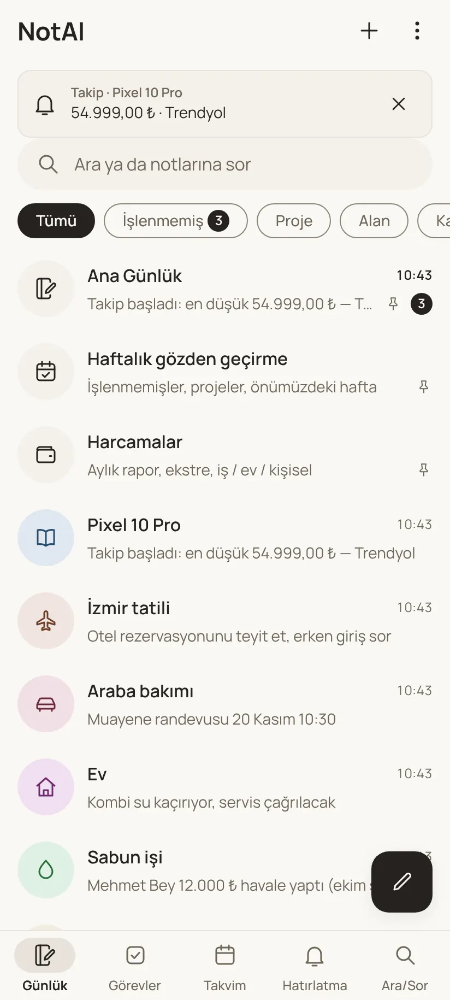
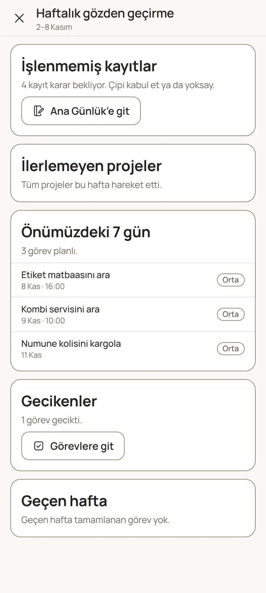
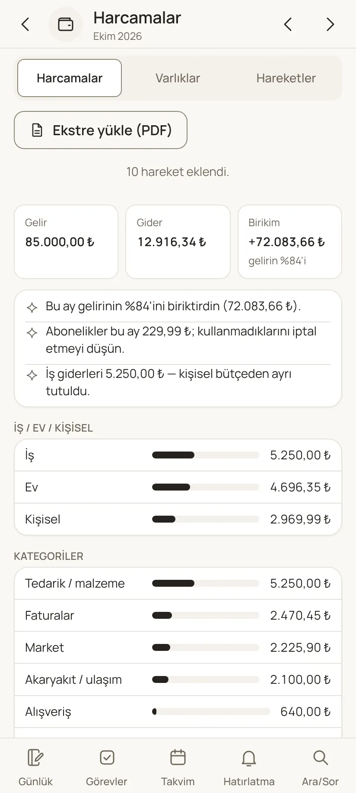
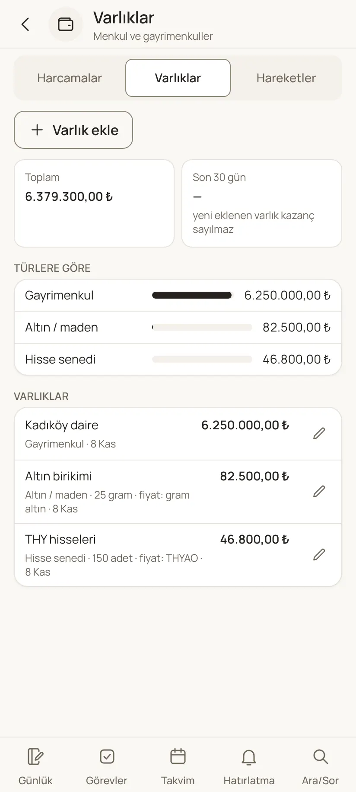
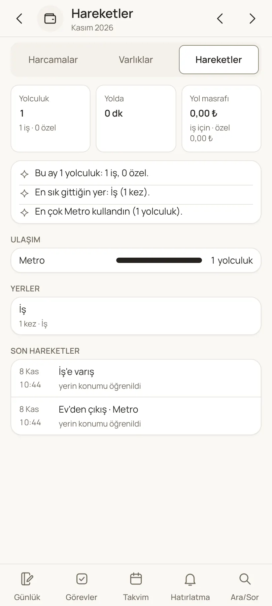
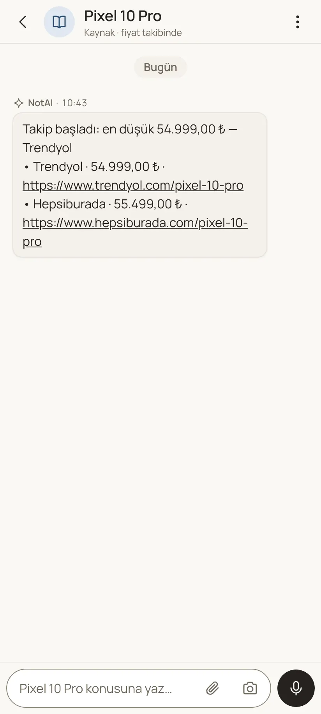
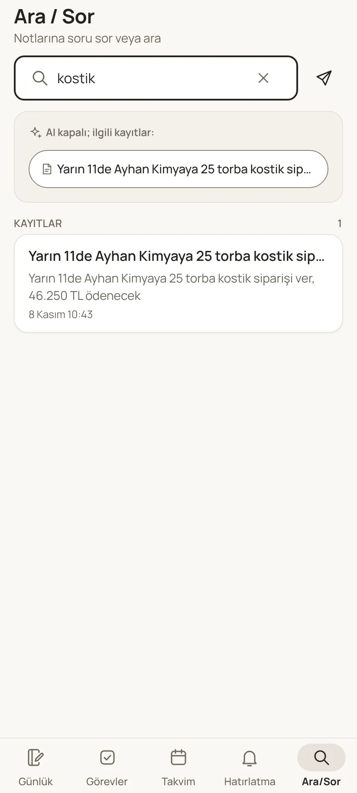

Bugün her rapor kendi köşesinde duruyor. Önerim üç kapı: ana ekranda tek bir "Raporlar" satırı, her konunun içinde o konunun rapor kartı ve serbest soru ("bu ay Mete Zeytin'e kaç adet?"). Karar senin; aşağıda bugünkü ekranlar ve önerinin taslakları var.
Gerçek ekranlar, örnek verilerle.







Eksik: İş raporu yok. Satılan kg/adet, müşteri ve ürün bazında satış, bekleyen tahsilat, depoda bekleyen ürün ve ortak cari hesap henüz hiçbir ekranda yok. Raporlar da tek bir yerden bulunmuyor.
Taslak ekranlardaki sayılar örnektir.
WhatsApp düzenini bozmadan, iğneli tek satır. Altındaki kısa özet, bakmaya değer bir şey varsa onu söyler.
En üstte serbest soru. Altta kartlar: bugün, iş, para, hayat. Her karta dokununca ayrıntılı rapora gidilir; ay okla değişir.
Sabun işi'ne girince üstte durum kartı; "Rapor"a dokununca müşteri, ürün, tahsilat ve ortak cari tabloları. Veri kutucuklardan gelir, yazı aranmaz.
| Müşteri | Adet | kg | Tahsilat |
|---|---|---|---|
| Kavlak | 500 | 40,0 | bekliyor |
| Mete Zeytin | 250 | 37,5 | alındı |
| Ürün | Adet | kg |
|---|---|---|
| 80 g zeytinyağlı | 500 | 40,0 |
| 150 g eşek sütlü | 250 | 37,5 |
| Şirinler (depoda) | 60 | — |
Üçü birlikte de kullanılabilir. Önerim A + C + Sor.
| Seçenek | Nasıl | Artı | Eksi |
|---|---|---|---|
| A · İğneli "Raporlar" satırı önerilen | Ana ekranda Ana Günlük'ün altında; Haftalık ve Harcamalar bunun içine taşınır | WhatsApp düzeni bozulmaz; tek kapı; özet satırı dikkat çeker | Bir dokunuş daha |
| B · Alt sekme "Raporlar" | Hatırlatma, Takvim'in içine katılır; yerine Raporlar sekmesi gelir | Her yerden tek dokunuş | Sekme düzeni değişir; hatırlatmalar bir kat içeri girer |
| C · Konu içi rapor kartı önerilen | Her konunun üstünde durum kartı; "Rapor" ile ayrıntı | Rapor bağlamın içinde; alt konu şablonlarından beslenir | Konular arası toplam için A ya da B yine gerekir |
| Sor önerilen | Ara/Sor'a ve Raporlar'ın üstüne serbest soru: "bu ay kaç kg?" | Önceden tasarlanmamış raporlar da çıkar | Cevabın doğruluğu kutucukların düzgün dolmasına bağlı |